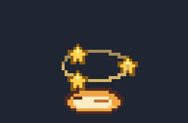

SIDEY DESIGN REVIEW · 03
고른 C는 살리고,
음을 조금 더 길게.
확대 C의 8비트 음색은 그대로, 음을 유지하는 시간을 세 가지로 늘렸습니다.
나머지 투척물 7종도 각각 3안씩 준비했어요. 말랑공은 고른 C 그대로입니다.
종류별 비교 버튼은 A → B → C 순서로 한 번씩 재생합니다. 반복 듣기는 피격 0.5초·확대 1초 간격이며 다른 재생을 누르면 이전 소리는 멈춥니다.
VISUAL / V2
기절 시안은 그대로
별 회전과 얇은 링은 2차 시안 그대로 유지했습니다. 기절은 6초, 회복 후 보호 시간은 없습니다. 최종 시각 승인은 아직 대기 중입니다.

FEEDBACK
종류별로 고르고, 한 번에 보내 주세요
확대는 C-1/C-2/C-3, 나머지는 종류별 A/B/C로 골라 주세요. 이미 고른 말랑공 C는 고정했습니다. 후보 선택이 서버로 전송되거나 자동 승인되지는 않습니다.